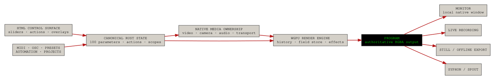
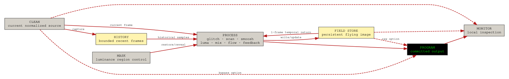
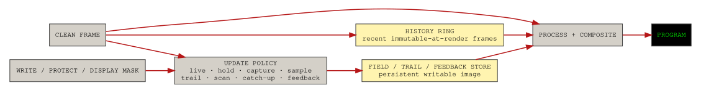
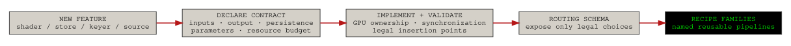
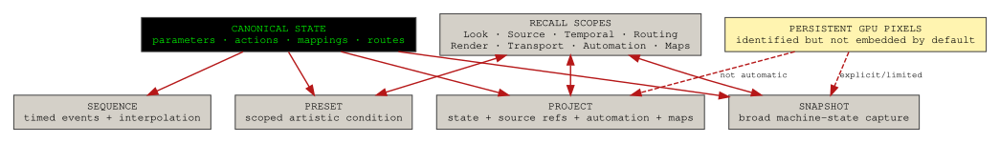
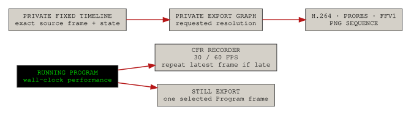
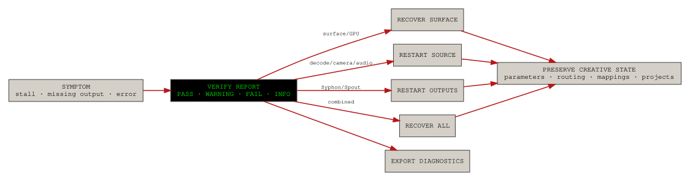
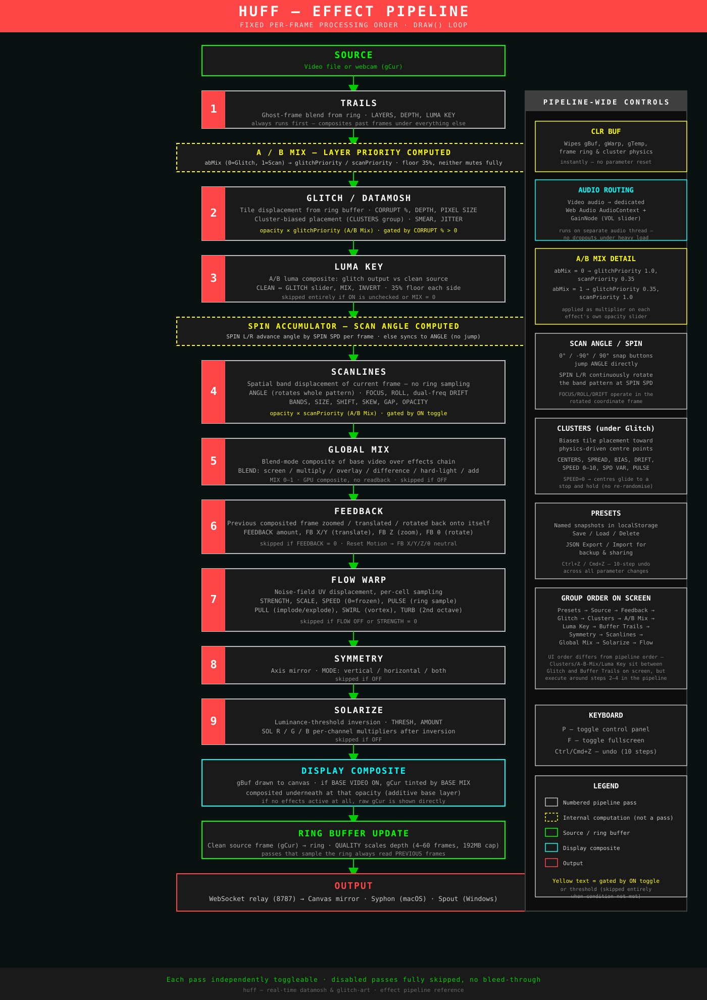
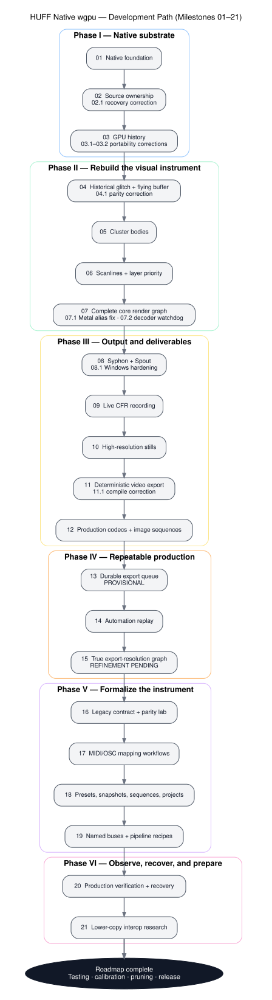
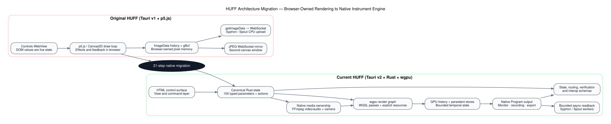

All 26 documentation pages in one file for printing, archiving, or full-text browser search.
Start Here
Native HUFF Overview
HUFF is now a native video instrument with an HTML control surface, Rust-owned media and state, and a wgpu render engine. This page explains the migration in ordinary language and defines the boundaries that every other feature depends on.
What HUFF is
HUFF is a native video instrument. The HTML window is the control surface, Rust owns state and media, and wgpu owns the Program image that feeds the screen, recording, export, and external outputs.

The current system in plain language
Control surface
The HTML window is a remote control. Moving a slider asks Rust to change a canonical parameter. The WebView is not the final renderer.
Canonical state
One Rust-owned registry defines the official value, type, range, default, milestone, and legacy name of each parameter. UI controls, presets, automation, MIDI, OSC, export, and routing all refer to that same state.
Media ownership
Only one primary visual source is authoritative at a time. File playback and camera capture have explicit start, stop, selection, timing, and recovery behavior. Audio is handled by native audio systems rather than by the canvas loop.
GPU image memory
HUFF keeps recent Clean frames, a persistent flying effect image, feedback targets, and Flow resources. These are real GPU allocations with lifecycle and reset behavior—not hidden browser canvases.
Program and Monitor
Program is the committed image for recording, export, Syphon, and Spout. Monitor is what the local output window displays. Monitor can inspect Clean or the raw Field Store without changing Program.
What is complete and what is not
| Area | Status | Honest interpretation |
|---|---|---|
| Native foundation, source ownership, history, core effects | Integrated and running | The port is structurally complete and user-confirmed to launch and operate. |
| Syphon | Implemented and locally exercised | The production path is bounded CPU readback, not zero-copy. |
| Spout | Implemented | Still needs broader Windows receiver and multi-GPU testing. |
| Live recording and still export | Integrated | Long-session and format-matrix tests remain valuable. |
| Deterministic export | Integrated; mixed test results reported | Architecture exists, but some combinations need refinement. |
| Export queue | Provisional | Useful infrastructure, but its value to the core instrument is not yet proven. |
| Automation | Integrated for deterministic export | There is no polished live automation transport/timeline yet. |
| Parity Lab | Calibration scaffold | It checks parameter contracts; it does not prove visual parity. |
| Named routing | Integrated and expandable | Recipes select among legal engine routes; they do not generate arbitrary graphs. |
| Interop Lab | Research-only analysis | It measures and documents the current copy path; it does not activate zero-copy output. |
Feature Index
This is the master preservation map. It records what every major feature does, its maturity, why it exists, and what knowledge or dependency must survive if the feature is later removed from the production branch.
Status vocabulary
Integrated means the feature is in the Milestone 21 tree. Provisional means it works structurally but its long-term product value or interface is undecided. Research means it observes or prepares future work without claiming the future transport is complete.
| Feature | Milestone | Status | Layman’s description | Removal / retention note |
|---|---|---|---|---|
| Native renderer | 01 | Integrated | Rust + wgpu own the output window and GPU surface. | Foundation; cannot be removed without returning to the legacy architecture. |
| Source ownership | 02 | Integrated | File and camera modes are mutually authoritative with explicit recovery. | Core reliability layer. |
| GPU history ring | 03 | Integrated | Bounded recent-frame memory used by temporal sampling and glitch. | Core to historical effects and deterministic export. |
| Flying framebuffer / Field Store | 04 | Integrated | Persistent effect image that drifts, rotates, scales, decays, and feeds later frames. | Defines the HUFF visual identity. |
| Cluster motion bodies | 05 | Integrated | Persistent moving centers organize glitch tiles into coherent constellations. | Creative module; can be disabled but should remain documented. |
| Scanlines and priority | 06 | Integrated | Native scan bands and explicit scan/glitch paint order. | Creative module and routing primitive. |
| Smoosh, Luma Key, Global Mix, Flow | 07 | Integrated | Core compositing and deformation graph. | Core creative engine; requires calibration. |
| Syphon / Spout | 08 | Integrated | External video publishing through bounded readback and platform upload. | Can be optional by platform; output boundary should remain. |
| Live recording | 09 | Integrated | Constant-frame-rate MP4 with source or microphone audio. | Useful standalone capability. |
| Still export | 10 | Integrated | Native, 1080p, 4K, 8K, or custom PNG with fit/sampling choices. | Independent output feature. |
| Deterministic export | 11 | Integrated, refine | Exact frame-driven rendering independent of live loop timing. | Major architectural capability; keep even if UI changes. |
| Production export profiles | 12 | Integrated | H.264, ProRes, FFV1, PNG sequence, alpha-aware options. | Preserve encoder/profile knowledge. |
| Export queue | 13 | Provisional | Persistent sequential jobs, retry, repeat, recovery. | Can be hidden or removed without deleting deterministic export. |
| Automation replay | 14 | Integrated, limited UI | Records canonical changes/actions and replays them in offline export. | State/event model should remain even if UI is replaced. |
| True high-resolution graph | 15 | Integrated, refine | Runs the effect graph at requested export resolution. | Important but resource-intensive. |
| Parity Lab | 16 | Provisional scaffold | Legacy parameter contract, reference profiles, drift reports. | Validator and historical contract are more valuable than the UI. |
| MIDI / OSC mapping | 17 | Integrated, test hardware | Learn, edit, save, map parameters/actions. | Control schema is reusable across future instruments. |
| Presets / snapshots / sequences / projects | 18 | Integrated | Typed state documents with recall scopes. | State vocabulary should survive any UI pruning. |
| Routing recipes and buses | 19 | Integrated | Seven named buses and six constrained recipes. | Expansion point for future effects and instruments. |
| Verification and recovery | 20 | Integrated | PASS/WARN/FAIL reporting and bounded recovery actions. | Operationally valuable; may move to Advanced view. |
| Interop Lab | 21 | Research | Reports copy cost and future Metal/D3D/Vulkan candidates. | Safe to omit from production UI; preserve reports and typed boundary. |
Recommended branching
huff-native-full-study # preserve every milestone and research tool huff-native-production # simplify and hide/remove provisional systems huff-native-effects-lab # add Field Store, stencil, Trail Store, keying, DVE
The full-study branch is the knowledge specimen. The production branch is the instrument. The effects-lab branch is where routing vocabulary and new persistent resources can evolve without destabilizing the performance build.
reference/ directory contains the milestone, state, routing, control, verification, interop, testing, and upgrade records used to build this site.Installation & Builds
HUFF is a Tauri application with a native Rust/wgpu engine and a static HTML/JavaScript control surface. The exact toolchain differs by platform, but FFmpeg/FFprobe and Rust are common requirements.
Requirements
| Component | Purpose | Notes |
|---|---|---|
| Node.js + npm | Frontend scripts and Tauri CLI wrapper | Use the project-local scripts in package.json. |
| Rust + Cargo | Compile the native engine | A current stable toolchain is required. |
| FFmpeg + FFprobe | File decode, audio work, recording, and export | Both executables must be available on PATH. |
| Metal / DX12 / Vulkan | wgpu backend | Metal is primary on macOS; DX12 on Windows; Vulkan is the Linux/research path. |
| Syphon framework | macOS external output | Bundled in the project tree. |
| Spout SDK/bridge | Windows external output | Bundled source/assets; requires Windows build validation. |
Development run
npm install npm run dev:metal # macOS npm run dev:dx12 # Windows npm run dev:vulkan # Linux / research
Production validation
npm run validate:parity npm run validate:control-maps npm run validate:state-model npm run validate:routing npm run validate:production npm run validate:interop
On a configured production computer, use npm run validate:production:strict. The strict check expects the real Rust tools, FFmpeg binaries, encoder support, platform assets, synchronized version metadata, and command wiring.
Production builds
npm run build:metal npm run build:dx12 npm run build:vulkan # or choose by platform: npm run build:production
What the validation scripts do not prove
Static validation can confirm schemas, files, command wiring, version synchronization, and many structural assumptions. It cannot prove GPU driver behavior, receiver compatibility, long-session stability, camera permissions, audio-device behavior, or that every render combination looks correct.
Interface Tour
The control window is deliberately dense because it exposes the complete study build. This page separates immediate performance controls from advanced state, export, diagnostic, and research tools.
Top toolbar
| Control | Purpose | Normal-use interpretation |
|---|---|---|
| Choose File | Load a video file through the native source system. | Primary file input. |
| Play / Pause | Control file transport. | Does not start the camera. |
| VOL / RATE / LOOP | Audio level, playback speed, loop policy. | Source transport controls. |
| Refresh | Regenerate or refresh effect state where supported. | Creative reseed/refresh operation. |
| Reset | Return canonical parameters to defaults. | Stronger than clearing temporal pixels. |
| Clear | Clear history, feedback, flying buffer, Flow, and cluster temporal state. | Keeps most parameter values. |
| Rec / Stop | Start and finalize live CFR recording. | Captures the live performance. |
| PNG | Export a still using the selected still profile. | Single-frame export. |
| Cam / Cam Stop / Refresh | Start, stop, or rescan camera devices. | Camera becomes authoritative while active. |
| MIDI / OSC | Open controller mapping windows. | Advanced control. |
| SYPHON / SPOUT | Open platform output windows. | Platform-specific. |
| VERIFY | Open production verification and bounded recovery. | Operational/diagnostic. |
| INTEROP | Open lower-copy analysis. | Research-only. |
| ABOUT | Build and application information. | Reference. |
Main control sections
| Section | What it controls |
|---|---|
| Offline Export | Profile, FPS, duration, start point, dimensions, sampling, fit, audio, alpha, automation, and job creation. |
| Automation | Record canonical parameter/action events; import/export/clear active clips. |
| Parity Lab | Apply reference profiles, compare current parameter definitions, export a parity report. |
| Export Queue | View, pause, reorder, cancel, retry, repeat, or clear deterministic export jobs. |
| Quick Presets | Legacy-style local preset workflow retained for compatibility. |
| State Documents | Create/load Preset, Snapshot, Sequence, or Project documents with recall scopes. |
| Routing | Choose Program and Monitor buses, apply named recipes, inspect/export the route plan. |
| Source / Render / History | Select clean/base behavior, resolution, brightness/contrast, seed, history allocation, capture rate, and sampling. |
| Feedback | Persistent recursive transform and decay. |
| Glitch | Historical tile sampling, stamping, smear, position, timing, opacity, and depth. |
| Clusters | Persistent cluster centers, motion, spread, steering, inertia, pulse, and boundary policy. |
| Layer Priority | Select whether Scan, Glitch, Neutral, or Pulse ordering wins. |
| Smoosh | Combine isolated effect layers through one of sixteen blend modes. |
| Luma Key | Use luminance to control clean restoration/reveal. |
| Scanlines | Band geometry, angle, spin, placement, zoom, drift, gap, and alpha. |
| Global Mix | Reintroduce/mix imagery at a selected stage and blend mode. |
| Flow | Warp/advection controls, pulse, impulse, swirl, turbulence, carry, and target insertion point. |
Overlay windows
MIDI and OSC
These windows own controller discovery, learning, mapping tables, import/export, and factory maps.
Syphon and Spout
These windows own platform sender state, frame-rate limits, and—in the Spout case—adapter selection.
VERIFY
Reports the running system’s health and offers bounded recovery without resetting the creative state.
INTEROP
Explains the current GPU→CPU→platform texture path and benchmarks only a bounded CPU-copy baseline. It does not enable zero-copy.
Suggested production simplification
The complete study build can later be reorganized into Perform, Edit, Route, Program, and Configure/Diagnose views. The current interface intentionally keeps all milestones visible so their behavior can be evaluated before pruning.
Media & Image
Sources & Transport
HUFF treats file playback, camera capture, video audio, and microphone audio as supervised native resources. The central rule is that one visual source is authoritative at a time.
File playback
Choosing a file starts the native decode path. The transport maintains play/pause, seek position, loop policy, and playback rate. Source audio is routed independently of the GPU render loop so visual load does not directly control audio delivery.
Camera capture
Starting a camera makes the selected camera authoritative. On macOS, the project includes an AVFoundation bridge; a cross-platform camera path also exists. Camera availability, permission, requested format, frame rate, and errors appear in Production Verification.
Mutual authority
FILE ACTIVE → camera work is stopped or inactive CAMERA ACTIVE → file decode/audio do not remain hidden owners SOURCE CHANGE → stale frames are cleared and the selected source takes authority
This boundary prevents the classic failure where the transport says “playing” while an old camera or decoder still owns the frame path.
Decoder watchdog
Milestone 07.2 added bounded FFmpeg reader threads and watchdog recovery. If decode progress stops while playback should be advancing, the source can be restarted rather than leaving the application in a silent half-running state.
Audio ownership
| Audio source | Use | Notes |
|---|---|---|
| Video audio | Playback and recording from the loaded file. | Can be selected explicitly or through automatic recording policy. |
| Microphone | Live input for recording. | Device state, buffering, and underflows appear in verification. |
| Silent | No audio in the recording/export. | Useful for external sound workflows. |
| Retimed source audio | Offline deterministic export. | The export timeline is authoritative; audio is prepared to match it. |
Recovery behavior
Restart Source attempts to restart the current file near its current position or restart the selected camera/profile. It is blocked while recording or deterministic export owns the source pipeline. Recovery should preserve parameters, routing, and project state.
Known risks
- Camera permissions and device formats are platform-specific.
- Some codecs and files expose seek, duration, or audio-layout edge cases.
- Long-session source stalls need real-world testing.
- Source restarts can create a brief temporal discontinuity even when the creative state remains intact.
Effects & Compositing
The current HUFF image is produced by several distinct effect families. They share one constrained renderer, but each has a different state model and artistic role.
Effect graph overview

Glitch: historical tile stamping
The glitch system reads rectangles from the GPU history ring and stamps them into the persistent effect image. Controls determine temporal depth, depth scatter, corruption density, drift, tile size, opacity, jitter, smear length and angle, speed, and base offset.
Why it is not merely random rectangles
The source pixels come from older frames, and their destination is a persistent image. The result can retain motion and accumulate transformation rather than disappearing after one frame.
Clusters: persistent moving bodies
Cluster mode groups tiles around persistent centers. Centers have velocity, steering, inertia, speed variance, pulse, coherence, breathing, spread, minimum radius, spatial gaps, and Bounce/Wrap boundary behavior. This creates recognizable moving constellations rather than a fresh random distribution every frame.
Scanlines: structured band geometry
Scanlines are native image bands with angle, spin, band count, radius/size, focus, shift, skew, drift, placement, zoom, zoom mode, speed, gap, and alpha. They can behave as content movement, pattern movement, or both.
Layer Priority
Scan, Glitch, Neutral, and Pulse decide which layer is drawn or treated as dominant where their outputs interact. This is a routing decision disguised as a compact performance control, which is why Milestone 19 incorporates it into recipe descriptions.
Smoosh
Smoosh isolates the glitch and scanline layers and combines them through one of sixteen Canvas-style blend modes: Screen, Add, Lighten, Color Dodge, Multiply, Darken, Color Burn, Overlay, Soft Light, Hard Light, Difference, Exclusion, Hue, Saturation, Color, and Luminosity. Amount and invert controls change the final relationship.
Luma Key
Luma Key derives a live mask from luminance and uses it to reveal or restore Clean imagery inside the processed image. The A/B threshold relationship, mix, and inversion define which regions are affected. It is a mask and restoration tool, not a complete multi-input keyer.
Global Mix
Global Mix blends a selected image relationship at one of four insertion stages: before feedback, after feedback, after Flow, or final. Its position is as important as its blend mode because the selected stage determines whether the mixed image enters recursive memory or only affects the final composite.
Flow
Flow is a warp/advection system with strength, scale, speed, pulse, trigger, impulse/pull, swirl, turbulence, spread, and carry. Its target can be Final, Glitch, or Scan, changing which intermediate image is warped.
Feedback
Feedback mixes a transformed prior image into the current process. Amount and persistence control energy and decay; X/Y translation, scale, and rotation create drifting, zooming, and rotating recursion.
Calibration status
The legacy parameter contract is preserved exactly for 87 mapped controls, but numerical equality does not guarantee identical visual behavior. Noise functions, timing, texture sampling, blend math, color space, and GPU precision can all change the perceived result. The future refinement pass should judge artistic behavior, not only numeric parity.
Temporal Memory
Temporal memory is the defining difference between a stateless filter and a video instrument. HUFF explicitly separates recent-frame history, the flying Field Store, feedback, Flow state, and clear/reset behavior.
History ring
The History bus is a bounded GPU texture array of previously captured Clean frames. History resolution, capture rate, sampling, and preset control the tradeoff among temporal depth, spatial detail, bandwidth, and memory.
History presets
| Preset | Intent | Typical tradeoff |
|---|---|---|
| Maximum | Keep the richest temporal data allowed by the budget. | Highest memory and capture cost. |
| Balanced | Moderate quality and depth. | General-use compromise. |
| Performance | Reduce history resolution/capture cost. | More speed, less detail/depth. |
| Custom | Choose dimensions and capture rate directly. | Requires manual budgeting. |
Field Store / flying framebuffer
The Field Store is the persistent ping-pong image that survives from frame to frame. Glitch tiles stamp into it; transforms move the stored image; decay removes energy; later stages can read it again. In the current recipe it is the only legal recursive image cycle.
Feedback versus Field Store
The Field Store is the persistent image resource. Feedback is one policy for reintroducing transformed prior imagery. Keeping those ideas separate matters because future instruments may use a Field Store with Hold, Capture, Scan, Protected Update, or Catch-Up policies that are not ordinary feedback.
Flow state
Flow can carry deformation through time and can receive momentary pulse actions. Clear Buffers resets its persistent state alongside history and feedback resources.
Clear versus Reset
| Action | Changes | Preserves |
|---|---|---|
| Clear Buffers | Temporal pixels, history, feedback/field-store contents, Flow state, cluster state as defined by the engine. | Most parameter values, source selection, routing, mappings, and project documents. |
| Reset Parameters | Canonical parameter values return to defaults. | Loaded source and application infrastructure; pixel clearing depends on action implementation. |
| Recover Surface | Reconstructs the output surface. | Creative state and temporal buffers when possible. |
| Restart Source | Restarts file/camera ownership. | Parameters and routing; source interruption may affect temporal continuity. |
Future temporal policies
The design research identifies a broader family: Live, Hold, Capture, Sample, Strobe, Accumulate, Trail, Scan, Catch-Up, Protected Update, Slide-and-Store, and Feedback. These policies are not all implemented in Milestone 21, but the current explicit resource model makes them possible.

Routing & Recipes
Milestone 19 names the internal image responsibilities and packages legal choices as recipes. Recipes can expand as new features create new legal routes, but they cannot invent connections the engine has not implemented and validated.
The seven named buses
| Bus | Type | Persistent? | Purpose |
|---|---|---|---|
| Clean | Video | No | Normalized current source before persistent effects. |
| History | Temporal video | Yes | Bounded previous Clean frames used for historical sampling. |
| Process | Video | No | The constrained glitch, scanline, Smoosh, key, Global Mix, Flow, and feedback path. |
| Field Store | Persistent video | Yes | The flying image memory and only legal recursive image cycle in the current recipe. |
| Mask | Mask | No | Luminance-derived regional control for clean restore/reveal. |
| Program | Video | No | Committed output for recording, export, Syphon, and Spout. |
| Monitor | Video monitor | No | Local native window view; can differ from Program. |
What a recipe actually changes
A recipe is a named collection of canonical parameter changes. It can select a Flow insertion target, layer priority, Smoosh state, Global Mix stage, Program source, and Monitor source. Because the underlying renderer already knows these legal choices, applying the recipe is safe and serializable.
Included recipes
| Recipe | Effective behavior |
|---|---|
| Classic HUFF | Scan-priority layering, Flow at Final, Global Mix after feedback, normal Program/Monitor. |
| Glitch → Flow → Scan | Flow processes the glitch result before scan/luma stages continue. |
| Scan → Flow → Glitch | Flow processes scanlines before glitch becomes dominant. |
| Isolated Smoosh Layers | Glitch and scanline layers are combined through Smoosh. |
| Clean Program Bypass | Clean goes directly to Program while the effect graph continues updating privately. |
| Program + Field Store Monitor | Program remains the final composite while the local window shows the raw Field Store. |
How recipes expand

For example, adding a proper Chroma Key module could make these legal after engine work:
Clean → Chroma Key → Glitch → Program History → Chroma Key → Field Store Glitch → Chroma Key → Clean Restore → Program
Adding a second persistent store could enable independent Glitch and Scanline memories before a controlled composite. The recipe is the reusable configuration; the engine still owns topology and synchronization.
Why not a free node graph?
- Same-frame read/write cycles can be invalid on the GPU.
- Arbitrary graphs make save/recall, automation, diagnostics, and export harder to reason about.
- Performance cost can become invisible.
- Instrument identity can disappear into generic patching.
The selected compromise is a growing library of constrained pipeline designs with explicit persistent-cycle modules.
State & Control
Presets, Snapshots & Projects
HUFF separates four state-document types so an artistic look, a complete recovery state, a timed performance, and a whole project are not confused with one another.
The four document types

| Type | Plain-language meaning | Typical contents | Should not silently include |
|---|---|---|---|
| Preset | A reusable artistic condition. | Selected look/effect parameters and optional routing. | Devices, output resolution, transport, or giant GPU pixel stores unless explicitly scoped. |
| Snapshot | A broad machine-state capture. | Most current operating state for recovery or comparison. | Unbounded hidden resources. |
| Sequence | A source-independent timed performance. | Automation events, actions, interpolation, duration. | Unsafe device and allocation changes. |
| Project | A portable working context. | Selected parameters, source references, transport, automation, mappings, routing, notes. | Implicit platform-specific assumptions without metadata. |
Recall scopes
When saving and loading, the operator can include Look, Source, Temporal, Routing, Render, Transport, Automation, MIDI/OSC Maps, and GPU Pixels. Loading uses the intersection of the document’s saved scope and the operator’s chosen recall scope.
Persistent pixels
Milestone 18 identifies history, feedback, flying-buffer, and Flow pixels as persistent image state, but the normal documents do not embed those potentially enormous GPU resources. Documents preserve how the instrument operates; they do not automatically turn every project into a multi-gigabyte pixel dump.
Quick presets versus typed documents
The original quick/local preset system remains for compatibility and observational comparison. The typed document system is the long-term architecture because it states what kind of object is being saved and which domains are allowed to change.
Why scope matters
- A look preset should not stop playback.
- A routing preset should not change output resolution.
- A source preset should not erase controller mappings.
- A sequence should not switch GPU adapters or codecs.
- A project should declare references rather than hiding live device assumptions.
Automation & Sequences
Automation records canonical parameter changes and actions, then replays them against the deterministic export clock. The event model is valuable; the current live-performance interface is intentionally incomplete.
What is recorded
- Eligible canonical number, boolean, and selection parameters.
- Parameter batches such as the initial state or preset/reset operations.
- Actions including Clear Buffers and Flow Pulse.
- Controller-driven changes when MIDI/OSC mapping is active.
Interpolation
| Mode | Behavior | Best for |
|---|---|---|
| Step | Hold the prior value until the next event. | Booleans, selections, hard cuts. |
| Linear | Constant-rate transition. | Straight parameter ramps. |
| Smooth | Smoothed transition curve. | General performance gestures. |
| Ease In | Slow start, faster finish. | Building motion. |
| Ease Out | Fast start, slow finish. | Settling motion. |
Boolean and selection parameters automatically use Step because interpolating between two labels or true/false states has no meaningful continuous value.
How it is triggered today
- Press Record in the Automation section.
- Move parameters or trigger recordable actions.
- Press Stop; the clip becomes the active automation.
- In Offline Export, select Active Automation.
- Queue/start the export. The fixed export timeline replays the clip.
There is no polished live Play/Pause/Rewind automation transport or visible timeline in Milestone 21. The automation is primarily an offline-render input.
Loop behavior
Looping repeats events, but persistent image memory does not automatically reset at the loop boundary. Record a Clear Buffers action at the desired boundary when every loop must begin from clean temporal state.
Determinism
Offline replay evaluates parameters at export time rather than wall-clock time. Actions fire when frame time crosses their timestamps. The automation clip is frozen into the export job and metadata so later UI changes do not alter the queued render.
Limits
- Maximum event count and duration are bounded.
- Not every system setting is sequenceable.
- Live automation preview remains a future usability feature.
- Persistent resources need explicit reset actions for exact loop repetition.
MIDI Mapping
MIDI mapping converts hardware controller messages into canonical HUFF parameter changes or actions. The mapping workflow is separate from the renderer so controller callbacks never directly own wgpu resources.
Workflow
- Open MIDI.
- Refresh ports and connect a device.
- Select a canonical parameter or action target.
- Press Learn Next and move a controller, or add a CC manually.
- Choose behavior, ranges, curve, smoothing, threshold, and enable state.
- Save the map as portable JSON.
Mapping behaviors
| Behavior | Meaning |
|---|---|
| Absolute | Scale the incoming CC value into the target range. |
| Gate | Treat values above a threshold as active and below as inactive. |
| Toggle | Each qualifying press flips a boolean or two-state target. |
| Trigger | Crossing the threshold fires an action such as Clear Buffers or Flow Pulse. |
Response shaping
Mappings support Linear, Smooth, Square, Cube, and Square-root curves, input/output ranges, inversion, smoothing, and trigger thresholds. These options let a physical fader feel useful across very different HUFF ranges.
Canonical actions
The mapped action registry includes Clear Buffers, Flow Pulse, and Reset Parameters. Actions pass through a bounded renderer-action bus instead of letting the MIDI thread manipulate GPU state.
Files and factory maps
Mappings use the portable huff-control-map/v1 model. Open, Save As, Factory, and Clear workflows are available. Duplicate-source conflicts are reported.
Testing status
The architecture and files are integrated, but comprehensive testing across physical controllers, unusual MIDI drivers, high-rate messages, and hot-plug behavior remains part of the larger hardware test cycle.
OSC Mapping
OSC mapping turns UDP address messages into canonical HUFF parameter changes and actions. It is the network-friendly counterpart to MIDI and is suitable for Max, TouchOSC, custom controllers, and external automation systems.
Workflow
- Open OSC and start the listener.
- Use Local Test to verify the service.
- Select a target and press Learn Next, then send an OSC message.
- Choose the argument index, input range, output range, behavior, curve, smoothing, and threshold.
- Save the mapping as portable JSON.
Address and argument model
An OSC source is identified by address plus argument index. Numeric messages can be scaled and curved like MIDI. Gate, Toggle, and Trigger behavior can drive booleans and actions.
Why OSC is important
- Network control without a browser-specific bridge.
- Easy integration with Max/MSP, TouchDesigner, custom Python/Rust tools, hardware gateways, and mobile controllers.
- Source-independent control that can also be recorded into automation.
Operational cautions
- UDP delivery is not guaranteed.
- Port conflicts and firewall rules are platform-specific.
- High message rates need smoothing or sender-side throttling.
- Remote networks should not be treated as authenticated control channels unless additional security is added.
Output & Export
Live Recording
Live recording captures the Program image as the performance happens. It intentionally preserves live timing and differs from deterministic offline export.
Live recording path

Constant frame rate
The recorder targets 30 or 60 FPS. If the renderer is late, it repeats the latest completed frame rather than producing variable frame timing. This makes the MP4 broadly compatible and keeps audio/video timing predictable.
Audio choices
| Mode | Behavior |
|---|---|
| Auto | Choose the appropriate available audio source under the recorder policy. |
| Video Audio | Use audio from the loaded file. |
| Mic | Use the selected microphone. |
| Silent | Create video without audio. |
Safe finalization
Stopping recording flushes and finalizes the encoder/muxer. Closing or interrupting the process before finalization can leave a partial file, so recording ownership and status are included in verification.
What live recording preserves
- Real-time controller gestures.
- Actual timing, including any live slowdown.
- Source audio or microphone performance.
- The current Program selection.
What it does not guarantee
- Exact repeatability.
- One unique render for every intended simulation frame.
- True full-resolution processing beyond the live render graph.
- Recovery from every external encoder or disk failure.
Still & Offline Export
HUFF has three distinct export systems: one-frame PNG stills, deterministic video/image-sequence rendering, and live recording. This page covers stills and deterministic offline rendering.
Still export
Still export writes PNG at Native, 1080p, 4K, 8K, or Custom dimensions. Smooth/Crisp choose sampling; Fit/Crop/Stretch determine how the source is placed. A sidecar records settings for reproducibility.
Deterministic offline export
The exporter uses a private exact-frame decoder and a fixed timeline. It freezes canonical state, resets private temporal resources, advances source time and automation by frame number, renders every requested frame, and sends the result to the selected encoder.
Why this differs from recording
LIVE RECORDING wall clock → take latest completed frame → repeat if late OFFLINE EXPORT frame 0 → exact source time → render frame 1 → exact source time → render ... computer may run slower than real time, but no simulation frame is skipped
Production profiles
| Profile | Container / codec | Audio | Alpha |
|---|---|---|---|
| H.264 MP4 | MP4 / libx264, CRF-oriented distribution profile | AAC | No |
| ProRes 422 HQ | MOV / 10-bit 4:2:2 | 24-bit PCM | No |
| ProRes 4444 | MOV / 4:4:4:4 | 24-bit PCM | Optional |
| FFV1 Lossless | MKV / lossless FFV1 | FLAC | Optional |
| PNG Sequence | Numbered PNG files | Optional separate WAV | Optional RGBA |
Full-resolution graph
Milestone 15 creates a private render graph at the export dimensions. History, glitch, clusters, scanlines, Smoosh, feedback, Luma Key, Global Mix, Flow, and final compositing are run at that resolution rather than merely enlarging the live output.
Resource limits
History remains bounded by its budget, and the exporter estimates total graph allocation. Very large graphs can be rejected rather than silently exhausting GPU memory. 8K is therefore a capability subject to device limits, not a guarantee on every machine.
Metadata and transaction safety
Exports use temporary destinations and explicit completed/cancelled/failed states. Sidecars record profile, codec, pixel format, alpha, source/timeline, render dimensions, graph/history topology, automation, and artifact lists.
Current refinement status
The system has run with some successful and some unsuccessful tests. The architecture is preserved, but codec/profile combinations, audio retiming, cancellation, large-resolution behavior, and visual parity need a structured local test matrix.
Export Queue
The export queue turns deterministic export into a persistent batch-job system. It is intentionally marked provisional because the core user may prefer a simple Start Export workflow.
What it adds
- Sequential waiting jobs.
- Immutable capture of parameters, source, timeline, profile, seed, and automation when queued.
- Pause/resume dispatch without interrupting the active job.
- Reorder waiting jobs.
- Cancel waiting or active jobs.
- Retry failed/cancelled/interrupted jobs from frame zero.
- Repeat completed jobs to a new destination.
- Persistent history and restart recovery.
- Destination conflict and duplicate protection.
One-job interpretation
Click + Queue → choose destination → job becomes Active automatically → completed output is recorded in history
With one job, the queue behaves almost like a Start Export button. The terminology is more complicated than the basic workflow.
Why it was built
High-resolution deterministic renders can take longer than real time. A queue supports unattended multi-format or multi-variation export and gives later automation/high-resolution features a reliable job boundary.
Why it may be removed or hidden
- The primary HUFF workflow may not need batch exports.
- The UI adds conceptual weight.
- A simple direct export may be clearer for artists.
- Long-term maintenance includes persistence, recovery, destination rules, and history states.
Safe removal boundary
The deterministic exporter can remain even if the queue UI and persistence layer are removed. A production branch could expose Export Video and move batch jobs to an Advanced panel or separate utility.
Syphon & Spout
Syphon on macOS and Spout on Windows publish the authoritative Program image to other applications. The current production implementation favors bounded reliability over zero-copy claims.
Current transport
Program wgpu texture → triple-buffered GPU MAP_READ → one dense shared CPU RGBA frame → platform texture upload → Syphon or Spout receiver
If the sender cannot keep up, new frames may be dropped rather than blocking the render thread or allowing unbounded memory growth.
Syphon
Syphon is the macOS output path. The bundled framework receives frames from a dedicated sender worker. A receiver may disconnect briefly during Restart Outputs and should see the sender return without restarting HUFF.
Spout
Spout is the Windows output path. Milestone 08.1 adds adapter selection, an ownership thread, static bridge linking, diagnostics, and receiver-compatibility hardening. Broader real Windows receiver and multi-GPU testing remains necessary.
Program source
Both senders publish Program, not necessarily the local Monitor. This enables the local window to inspect Field Store while an external receiver gets the finished composite.
Frame-rate controls
Sender windows offer bounded target rates such as 60, 30, 24, and 15 FPS. This limits bridge pressure without changing the internal render rate.
Failure behavior
- Sender errors appear in Production Verification.
- Restart Outputs rebuilds active platform senders.
- The local renderer should continue if an external consumer disconnects.
- Output transport must never take ownership of the creative state.
ExternalOutputFrame boundary and Program semantics.Operations
Verification & Recovery
Production Verification answers “what is actually happening on this computer?” and provides bounded recovery actions that should not erase the creative setup.
Report categories
| Category | Checks |
|---|---|
| Application | OS, architecture, version, build type. |
| GPU | wgpu backend, adapter, driver, surface format, frame progression, readback health. |
| Tools | FFmpeg, FFprobe, required encoders. |
| Video | Decoder progress, stalls, watchdog recoveries, source ownership. |
| Camera | Permission, device, format, FPS, errors. |
| Audio | Video audio, microphone devices, buffering, underflows. |
| Platform output | Syphon/Spout availability, sender state, adapter context. |
| Ownership | Recording, still export, offline export, and queue activity. |
| Control | MIDI and OSC service state. |
| Storage | Temporary-directory write access. |
PASS, WARNING, FAIL, INFO
A report distinguishes normal inactive features from actual failures. For example, Spout unavailable on macOS is informational; an active sender that is not advancing is a failure candidate.
Recovery actions
| Action | What it does | What it should preserve |
|---|---|---|
| Recover Surface | Reconstruct/reconfigure the wgpu surface. | Parameters, routing, source position, and temporal state where possible. |
| Restart Source | Restart file decode/audio near the current position or restart camera profile. | Creative parameters, routing, mappings, and documents. |
| Restart Outputs | Restart active Syphon and Spout senders. | Local image and source. |
| Recover All | Run all applicable bounded recovery operations. | The complete creative setup. |

Diagnostics export
The exported folder includes production-report JSON/text, app info, parameter state, route plan, state model, interop report, and a README. This is the preferred evidence bundle for debugging a failure that cannot be reproduced immediately.
What recovery does not promise
- No recovery can guarantee that a failed codec, device driver, or disconnected disk resumes perfectly.
- Restarting a source may create a visible temporal discontinuity.
- Recovery is blocked when another subsystem owns the source pipeline.
- A successful report does not replace long-session testing.
Parity & Calibration
The Parity Lab preserves the legacy control contract and creates repeatable reference setups for visual calibration. It is a measurement scaffold, not proof that the native image is pixel-identical to the original browser renderer.
What the contract preserves
The embedded legacy contract records 87 original controls and compares their identifiers, types, defaults, minimums, maximums, steps, and selection options with the native canonical registry.
Reference profiles
| Profile | Purpose |
|---|---|
| Legacy Defaults | Return the mapped legacy control set to the preserved defaults. |
| Glitch Isolation | Disable competing systems so historical tile behavior can be judged. |
| Cluster Isolation | Expose cluster motion, spread, inertia, and boundary behavior. |
| Scanline Isolation | Expose scan geometry and movement without glitch interference. |
| Feedback Reference | Create a repeatable recursive-transform test. |
| Flow Reference | Create a repeatable warp/advection test. |
Compare and report
Compare checks the current native definitions and values against the preserved contract. Export Report writes machine-readable evidence that can be kept with a test build or visual-calibration session.
What it proves
- A parameter still exists under the expected legacy/canonical identity.
- Its declared type, range, step, default, and options have not drifted.
- A reference profile only uses known canonical parameters.
What it does not prove
- That WGSL and p5/WebGL blend math are identical.
- That noise, random distribution, timing, sampling, or color space match.
- That the same numeric value feels equally useful.
- That effect interactions are visually correct.
Recommended calibration record
For every effect family, retain Legacy Reference, Native Corrected, Expanded Native, and Stress-Test presets plus screenshots/video, source media, routing recipe, render/history settings, and diagnostics.
Production treatment
The command-line/static validator and frozen legacy contract are valuable even if the in-app Parity Lab is removed. The panel may be better placed under Research or Developer Tools after calibration is complete.
Interop Research
The Interop Lab documents and measures the current external-output copy path and records realistic lower-copy candidates. It deliberately does not claim that zero-copy is complete.
What Analyze Current Path reports
- OS, architecture, wgpu backend, adapter, driver, surface format.
- Render dimensions and reference output rate.
- Bytes per RGBA frame.
- GPU readback, host repack, and platform upload stages.
- Estimated MiB/s for each full-frame stage.
- Current Syphon/Spout state.
- Candidate Metal, Direct3D, and Vulkan transports.
- The recommended next proof-of-concept for the platform.
CPU Copy Probe
The probe measures a bounded host-memory memcpy baseline and estimates the cost of one current-resolution RGBA copy. It does not measure GPU readback latency, map synchronization, Metal/DX upload, receiver latency, or total end-to-end delay.
Candidate paths
| Platform | Candidate | Main blocker/risk |
|---|---|---|
| macOS | Direct Metal texture publication to Syphon | Accessing compatible native Metal texture ownership and synchronization through wgpu. |
| macOS | IOSurface-backed bridge texture | Format, lifetime, cross-process synchronization, and fallback complexity. |
| Windows | D3D12 shared-handle Spout path | Receiver expectations, adapter identity, fences, and API compatibility. |
| Windows | D3D11On12 bridge | Extra translation layer, synchronization, and driver variability. |
| Vulkan | External-memory transport | Platform-specific handles and no single universal receiver ecosystem. |
Typed output boundary
Syphon and Spout accept ExternalOutputFrame. The only production variant is currently CpuRgba(OutputFrame). A future feature-gated Metal/D3D/Vulkan token can be added without redesigning the sender-worker API.
Fallback rule
Any lower-copy path must automatically fall back to the bounded CPU transport when adapter matching, texture sharing, synchronization, receiver compatibility, or recovery tests fail.
Why the Lab may not belong in production
It is useful for research, performance analysis, and future engine extraction, but ordinary HUFF users do not need a bandwidth-analysis panel during performance. The report and typed boundary can survive even when the UI is removed.
Testing Strategy
The conversion is complete, but production confidence comes from systematic testing rather than milestone count. The recommended test cycle separates subsystem tests, combinations, long sessions, state recovery, and output formats.
Test order
- Freeze/tag Milestone 21 and create full-study, production, and effects-lab branches.
- Verify launch, local video, camera, audio, and basic rendering independently.
- Test each effect family in isolation.
- Test known high-risk combinations.
- Test Program/Monitor and routing recipes.
- Test each output independently, then in combinations.
- Test save/load, restart, recovery, and diagnostics.
- Run 30-minute, 2-hour, then 6–8-hour sessions.
- Calibrate visual behavior after crashes, stalls, and leaks are under control.
Effect matrix
Glitch only Clusters only Scanlines only Feedback only Flow only Luma Key only Smoosh only Global Mix only Glitch + Feedback Glitch + Flow Scanlines + Luma Key Flow + Feedback Glitch + Scanlines + Flow Everything enabled
Output matrix
| Output | Minimum useful test |
|---|---|
| Local window | Resize, minimize/restore, occlusion, monitor bus changes. |
| Syphon | Receiver connect/disconnect, restart sender, 15/24/30/60 FPS. |
| Spout | Windows receiver matrix, adapter selection, multi-GPU. |
| Live recording | 30/60 FPS, video audio, mic, silent, safe stop. |
| Still PNG | Native/1080p/4K/custom; Fit/Crop/Stretch; Smooth/Crisp. |
| Offline H.264 | Short deterministic repeat; compare decoded frames. |
| ProRes / FFV1 | Codec availability, alpha, audio, cancellation. |
| PNG sequence | Numbering, alpha, audio WAV, interrupted directory cleanup. |
Long-session observations
- Memory growth.
- GPU allocation changes.
- Decoder watchdog restarts.
- Audio underflows.
- Effects silently stopping.
- Transport advancing while video stalls.
- Syphon/Spout disconnects.
- Frame pacing degradation.
- Queue ownership stuck after failure.
Visual calibration records
For each effect family, save Legacy Reference, Native Corrected, Expanded Native, and Stress-Test presets. Document minimum, maximum, useful range, default, response curve, and interaction with other stages.
Evidence bundle
When a failure occurs, export Production Verification diagnostics and retain the source file, route plan, parameter state, automation clip, output profile, and exact reproduction steps.
Reference
Parameter Reference
The Milestone 21 registry contains 100 canonical parameters across Source, Frame History, Feedback, Glitch, Clusters, Layer Priority, Smoosh, Luma Key, Scanlines, Global Mix, Flow, and Routing.
How to read the registry
The canonical ID is the stable engine-facing name. The legacy ID preserves compatibility with the earlier HTML/JavaScript controls. Range and options are validated by Rust. “Implemented: No” means the definition is preserved but the behavior is not currently active.
Source
| Label | Canonical ID | Legacy ID | Kind | Default | Range / options | Implemented | Milestone |
|---|---|---|---|---|---|---|---|
| BASE ON | source.base_enabled | baseOn | Bool | true | true / false | Yes | 02 |
| BASE MIX | source.base_mix | baseMix | Number | 1 | 0.0 … 1.0; step 0.05 | Yes | 02 |
| BG MODE | source.background | bgMode | Select | black | black / green / blue / white | Yes | 02 |
| SEED ON LOAD | source.seed_on_load | seedOnLoad | Bool | true | true / false | No | future |
| SEED | source.seed | seed | Number | 912831 | — … —; step 1.0 | Yes | 04 |
| QUALITY | render.quality | quality | Number | 1 | 0.0 … 3.0; step 0.05 | Yes | 03 |
| RENDER RESOLUTION | render.resolution_mode | renderResolution | Select | match | match / 640x360 / 960x540 / 1280x720 / 1920x1080 / custom | Yes | 02 |
| BRIGHTNESS | color.brightness | brightness | Number | 1 | 0.0 … 2.0; step 0.01 | Yes | 02 |
| CONTRAST | color.contrast | contrast | Number | 1 | 0.0 … 2.0; step 0.01 | Yes | 02 |
| RENDER CUSTOM W | render.custom_width | renderCustomW | Number | 1280 | 160.0 … 3840.0; step 1.0 | Yes | 02 |
| RENDER CUSTOM H | render.custom_height | renderCustomH | Number | 720 | 160.0 … 2160.0; step 1.0 | Yes | 02 |
Frame History
| Label | Canonical ID | Legacy ID | Kind | Default | Range / options | Implemented | Milestone |
|---|---|---|---|---|---|---|---|
| HISTORY PRESET | history.preset | historyPreset | Select | maximum | maximum / balanced / performance / custom | Yes | 02 |
| HISTORY RESOLUTION | history.resolution | historyResolution | Select | full | full / 75 / 50 / 25 / custom | Yes | 02 |
| HISTORY CUSTOM W | history.custom_width | historyCustomW | Number | 960 | 64.0 … 3840.0; step 1.0 | Yes | 02 |
| HISTORY CUSTOM H | history.custom_height | historyCustomH | Number | 540 | 64.0 … 2160.0; step 1.0 | Yes | 02 |
| HISTORY CAPTURE RATE | history.capture_rate | historyCaptureRate | Select | every | every / 30 / 24 / 15 / 10 | Yes | 02 |
| HISTORY SAMPLING | history.sampling | historySampling | Select | smooth | smooth / crisp | Yes | 02 |
Feedback
| Label | Canonical ID | Legacy ID | Kind | Default | Range / options | Implemented | Milestone |
|---|---|---|---|---|---|---|---|
| FEEDBACK | feedback.amount | feedback | Number | 0.6 | 0.0 … 3.0; step 0.05 | Yes | 02 |
| PERSISTENCE | feedback.persistence | persistence | Number | 0.7 | 0.0 … 10.0; step 0.05 | Yes | 02 |
| FB X | feedback.translate_x | fbX | Number | 1 | -1.0 … 1.0; step 0.001 | Yes | 02 |
| FB Y | feedback.translate_y | fbY | Number | 1 | -1.0 … 1.0; step 0.001 | Yes | 02 |
| FB Z | feedback.scale | fbZ | Number | 1 | 0.98 … 1.03; step 0.005 | Yes | 02 |
| FB THETA | feedback.rotation | fbTheta | Number | 0.01 | -2.0 … 2.0; step 0.005 | Yes | 02 |
Glitch
| Label | Canonical ID | Legacy ID | Kind | Default | Range / options | Implemented | Milestone |
|---|---|---|---|---|---|---|---|
| CORRUPT ON | glitch.corrupt_on | corruptOn | Bool | false | true / false | Yes | 03 |
| DEPTH | glitch.depth | depth | Number | 0.5 | 0.0 … 0.5; step 0.01 | Yes | 03 |
| DEPTH SCATTER | glitch.depth_scatter | depthScatter | Number | 1 | 0.0 … 1.0; step 0.01 | Yes | 04 |
| CORRUPT | glitch.corrupt | corrupt | Number | 0.3 | 0.0 … 7.0; step 0.01 | Yes | 03 |
| CORRUPT DRIFT | glitch.corrupt_drift | corruptDrift | Number | 0 | 0.0 … 1.0; step 0.01 | Yes | 04 |
| BLOCK | glitch.block | block | Number | 1000 | 150.0 … 2000.0; step 2.0 | Yes | 04 |
| GLITCH SIZE | glitch.glitch_size | glitchSize | Number | 10 | 1.0 … 60.0; step 0.01 | Yes | 04 |
| GLITCH ALPHA | glitch.glitch_alpha | glitchAlpha | Number | 1 | 0.0 … 1.0; step 0.01 | Yes | 03 |
| GLITCH JITTER | glitch.glitch_jitter | glitchJitter | Number | 1 | 0.0 … 1.0; step 0.01 | Yes | 04 |
| GLITCH SMEAR | glitch.glitch_smear | glitchSmear | Number | 6 | 0.0 … 200.0; step 0.01 | Yes | 04 |
| GLITCH SMEAR ANGLE | glitch.glitch_smear_angle | glitchSmearAngle | Number | 0 | 0.0 … 360.0; step 1.0 | Yes | 04 |
| GLITCH SPEED | glitch.glitch_speed | glitchSpeed | Number | 0.8 | 0.0 … 5.0; step 0.005 | Yes | 04 |
| GLITCH SPEED FINE | glitch.glitch_speed_fine | glitchSpeedFine | Number | 1 | 0.0 … 10.0; step 0.001 | Yes | 04 |
| GLITCH SPEED MUL | glitch.glitch_speed_mul | glitchSpeedMul | Number | 1 | 0.0 … 10.0; step 0.1 | Yes | 04 |
| GLITCH BASE X | glitch.glitch_base_x | glitchBaseX | Number | 0 | -1000.0 … 1000.0; step 1.0 | Yes | 04 |
| GLITCH BASE Y | glitch.glitch_base_y | glitchBaseY | Number | 0 | -1000.0 … 1000.0; step 1.0 | Yes | 04 |
Clusters
| Label | Canonical ID | Legacy ID | Kind | Default | Range / options | Implemented | Milestone |
|---|---|---|---|---|---|---|---|
| CLUSTER TILES | clusters.cluster_tiles | clusterTiles | Bool | false | true / false | Yes | 05 |
| CLU CENTERS | clusters.clu_centers | cluCenters | Number | 3 | 1.0 … 20.0; step 1.0 | Yes | 05 |
| CLU SPREAD | clusters.clu_spread | cluSpread | Number | 80 | 1.0 … 300.0; step 1.0 | Yes | 05 |
| CLU MIN SPREAD | clusters.clu_min_spread | cluMinSpread | Number | 0 | 0.0 … 150.0; step 1.0 | Yes | 05 |
| SPATIAL GAP | clusters.spatial_gap | spatialGap | Number | 40 | 0.0 … 200.0; step 1.0 | Yes | 04.1 |
| CLU BIAS | clusters.clu_bias | cluBias | Number | 0.85 | 0.0 … 1.0; step 0.01 | Yes | 05 |
| CLU DRIFT | clusters.clu_drift | cluDrift | Number | 0 | 0.0 … 5.0; step 0.01 | Yes | 05 |
| CLU SPEED | clusters.clu_speed | cluSpeed | Number | 0 | 0.0 … 10.0; step 0.01 | Yes | 05 |
| CLU STEER | clusters.clu_steer | cluSteer | Number | 1 | 0.0 … 10.0; step 0.01 | Yes | 05 |
| CLU SPEED VAR | clusters.clu_speed_var | cluSpeedVar | Number | 0 | 0.0 … 2.0; step 0.01 | Yes | 05 |
| CLU PULSE | clusters.clu_pulse | cluPulse | Number | 0 | 0.0 … 10.0; step 0.1 | Yes | 05 |
| CLU INERTIA | clusters.clu_inertia | cluInertia | Number | 0.92 | 0.01 … 0.99; step 0.01 | Yes | 05 |
| CLU COHERE | clusters.clu_cohere | cluCohere | Number | 0.8 | 0.0 … 1.0; step 0.01 | Yes | 05 |
| CLU BREATHE | clusters.clu_breathe | cluBreathe | Number | 0 | 0.0 … 0.9; step 0.01 | Yes | 05 |
| CLU BOUNDS | clusters.clu_bounds | cluBounds | Select | bounce | bounce / wrap | Yes | 05 |
Layer Priority
| Label | Canonical ID | Legacy ID | Kind | Default | Range / options | Implemented | Milestone |
|---|---|---|---|---|---|---|---|
| LAYER PRIORITY | layers.layer_priority | layerPriority | Select | scan | scan / glitch / neutral / pulse | Yes | 06 |
| LAYER PULSE SPEED | layers.layer_pulse_speed | layerPulseSpeed | Number | 2 | 0.2 … 12.0; step 0.1 | Yes | 06 |
Smoosh
| Label | Canonical ID | Legacy ID | Kind | Default | Range / options | Implemented | Milestone |
|---|---|---|---|---|---|---|---|
| SMOOSH ON | smoosh.smoosh_on | smooshOn | Bool | false | true / false | Yes | 07 |
| SMOOSH BLEND | smoosh.smoosh_blend | smooshBlend | Select | screen | screen / lighter / lighten / color-dodge / multiply / darken / color-burn / overlay / soft-light / hard-light / difference / exclusion / hue / saturation / color / luminosity | Yes | 07 |
| SMOOSH AMT | smoosh.smoosh_amt | smooshAmt | Number | 1 | 0.0 … 1.0; step 0.01 | Yes | 07 |
| SMOOSH INVERT | smoosh.smoosh_invert | smooshInvert | Bool | false | true / false | Yes | 07 |
Luma Key
| Label | Canonical ID | Legacy ID | Kind | Default | Range / options | Implemented | Milestone |
|---|---|---|---|---|---|---|---|
| LUMA KEY ON | luma.luma_key_on | lumaKeyOn | Bool | false | true / false | Yes | 07 |
| LUMA KEY AB | luma.luma_key_ab | lumaKeyAB | Number | 0.5 | 0.0 … 1.0; step 0.01 | Yes | 07 |
| LUMA KEY MIX | luma.luma_key_mix | lumaKeyMix | Number | 0 | 0.0 … 1.0; step 0.01 | Yes | 07 |
| LUMA KEY INVERT | luma.luma_key_invert | lumaKeyInvert | Bool | false | true / false | Yes | 07 |
Scanlines
| Label | Canonical ID | Legacy ID | Kind | Default | Range / options | Implemented | Milestone |
|---|---|---|---|---|---|---|---|
| CLUSTERS | scanlines.clusters | clusters | Bool | false | true / false | Yes | 06 |
| SCAN ANGLE | scanlines.scan_angle | scanAngle | Number | 0 | -180.0 … 180.0; step 1.0 | Yes | 06 |
| SCAN SPIN LEFT | scanlines.scan_spin_left | scanSpinLeft | Bool | false | true / false | Yes | 06 |
| SCAN SPIN RIGHT | scanlines.scan_spin_right | scanSpinRight | Bool | false | true / false | Yes | 06 |
| SCAN SPIN SPEED | scanlines.scan_spin_speed | scanSpinSpeed | Number | 1 | 0.1 … 10.0; step 0.1 | Yes | 06 |
| CLUSTER COUNT | scanlines.cluster_count | clusterCount | Number | 3 | 1.0 … 50.0; step 1.0 | Yes | 06 |
| CLUSTER RADIUS | scanlines.cluster_radius | clusterRadius | Number | 10 | 1.0 … 120.0; step 1.0 | Yes | 06 |
| SCAN FOCUS | scanlines.scan_focus | scanFocus | Number | 0.5 | 0.0 … 2.0; step 0.01 | Yes | 06 |
| SCAN SHIFT | scanlines.scan_shift | scanShift | Number | 0.12 | -4.0 … 4.0; step 0.01 | Yes | 06 |
| SCAN SKEW | scanlines.scan_skew | scanSkew | Number | 0 | -3.0 … 3.0; step 0.01 | Yes | 06 |
| SCAN DRIFT | scanlines.scan_drift | scanDrift | Number | 0.5 | 0.0 … 5.0; step 0.01 | Yes | 06 |
| SCAN PLACE X | scanlines.scan_place_x | scanPlaceX | Number | 0 | -1.0 … 1.0; step 0.01 | Yes | 06 |
| SCAN PLACE Y | scanlines.scan_place_y | scanPlaceY | Number | 0 | -1.0 … 1.0; step 0.01 | Yes | 06 |
| SCAN ZOOM | scanlines.scan_zoom | scanZoom | Number | 1 | 0.25 … 6.0; step 0.01 | Yes | 06 |
| SCAN ZOOM MODE | scanlines.scan_zoom_mode | scanZoomMode | Select | content | content / pattern / both | Yes | 06 |
| SCAN SPEED | scanlines.scan_speed | scanSpeed | Number | 1 | 0.0 … 5.0; step 0.01 | Yes | 06 |
| SCAN GAP | scanlines.scan_gap | scanGap | Number | 0 | 0.0 … 200.0; step 1.0 | Yes | 06 |
| SCAN ALPHA | scanlines.scan_alpha | scanAlpha | Number | 0.86 | 0.0 … 1.0; step 0.01 | Yes | 06 |
Global Mix
| Label | Canonical ID | Legacy ID | Kind | Default | Range / options | Implemented | Milestone |
|---|---|---|---|---|---|---|---|
| GLOBAL MIX ON | global_mix.global_mix_on | globalMixOn | Bool | false | true / false | Yes | 07 |
| GLOBAL MIX BLEND | global_mix.global_mix_blend | globalMixBlend | Select | screen | screen / lighter / lighten / color-dodge / multiply / darken / color-burn / overlay / soft-light / hard-light / difference / exclusion / hue / saturation / color / luminosity / source-over | Yes | 07 |
| GLOBAL MIX AMT | global_mix.global_mix_amt | globalMixAmt | Number | 0 | 0.0 … 1.0; step 0.01 | Yes | 07 |
| GLOBAL MIX POS | global_mix.global_mix_pos | globalMixPos | Select | after | before / after / afterflow / final | Yes | 07 |
Flow
| Label | Canonical ID | Legacy ID | Kind | Default | Range / options | Implemented | Milestone |
|---|---|---|---|---|---|---|---|
| FLOW ON | flow.flow_on | flowOn | Bool | false | true / false | Yes | 07 |
| FLOW STRENGTH | flow.flow_strength | flowStrength | Number | 6 | 0.0 … 20.0; step 1.0 | Yes | 07 |
| FLOW SCALE | flow.flow_scale | flowScale | Number | 80 | 40.0 … 200.0; step 1.0 | Yes | 07 |
| FLOW SPEED | flow.flow_speed | flowSpeed | Number | 1 | 0.0 … 6.0; step 0.01 | Yes | 07 |
| FLOW PULSE | flow.flow_pulse | flowPulse | Number | 0 | 0.0 … 200.0; step 1.0 | Yes | 07 |
| FLOW PULSE TRIG | flow.flow_pulse_trig | flowPulseTrig | Bool | false | true / false | Yes | 07 |
| FLOW IMPL | flow.flow_impl | flowImpl | Number | 0 | -5.0 … 5.0; step 0.01 | Yes | 07 |
| FLOW SWIRL | flow.flow_swirl | flowSwirl | Number | 0 | -2.0 … 2.0; step 0.01 | Yes | 07 |
| FLOW TURB | flow.flow_turb | flowTurb | Number | 0 | 0.0 … 1.0; step 0.01 | Yes | 07 |
| FLOW SPREAD | flow.flow_spread | flowSpread | Number | 1 | 0.25 … 4.0; step 0.01 | Yes | 07 |
| FLOW CARRY | flow.flow_carry | flowCarry | Number | 0 | 0.0 … 2.0; step 0.01 | Yes | 07 |
| FLOW TARGET | flow.flow_target | flowTarget | Select | final | final / glitch / scan | Yes | 07 |
Routing
| Label | Canonical ID | Legacy ID | Kind | Default | Range / options | Implemented | Milestone |
|---|---|---|---|---|---|---|---|
| PROGRAM BUS | routing.program_bus | programBus | Select | program | program / clean / field_store | Yes | 19 |
| MONITOR BUS | routing.monitor_bus | monitorBus | Select | program | program / clean / field_store | Yes | 19 |
Architecture
The native application is organized around ownership boundaries: frontend controls, canonical state, media, GPU resources, render scheduling, output workers, state documents, and diagnostics.
Architecture layers
Primary modules
| Module/file | Responsibility |
|---|---|
| main.rs | Tauri commands, application lifecycle, shared handles, window integration. |
| parameters.rs | 100 canonical parameter definitions, validation, snapshots, revisions. |
| source.rs / video.rs / camera*.rs | Source authority, file decoding, camera capture, frame delivery, recovery. |
| audio.rs / video_audio.rs / audio_router.rs | Playback audio, microphone routing, recording/export audio ownership. |
| renderer.rs / compositor.wgsl | wgpu device/surface, textures, effect graph, Program/Monitor outputs. |
| history.rs | Bounded GPU history ring and capture policy. |
| recording.rs | Live constant-frame-rate capture and muxing. |
| export.rs / export.wgsl | Still export and image scaling. |
| offline_export.rs | Fixed-timeline private decoder/render/encoder workflow. |
| export_queue.rs | Persistent deterministic-export job management. |
| automation.rs | Canonical event clips and deterministic evaluation. |
| control_mapping.rs / midi.rs / osc.rs | External control mapping and services. |
| state_documents.rs | Preset, Snapshot, Sequence, Project, recall scopes. |
| routing.rs | Buses, recipes, route plans, legal cycles. |
| syphon.rs / spout.rs / output_frame.rs | External Program publication and transport boundary. |
| production.rs | Runtime checks, diagnostics, bounded recovery. |
| interop.rs | Current copy-path reports and lower-copy candidate analysis. |
| parity.rs | Legacy parameter contract comparison and profiles. |
Thread and ownership principles
- The render thread owns wgpu work; MIDI/OSC callbacks send bounded actions rather than touching GPU objects.
- Decoder and output workers are bounded so a slow consumer cannot create unlimited pressure.
- One source is authoritative at a time.
- Program is the single committed output contract.
- Persistent cycles are explicit resources, not arbitrary same-frame graph loops.
- State files reference canonical IDs rather than UI widget names.
Original versus current

Why the fixed recipe remains
The native port needed deterministic order for parity testing, debugging, and performance measurement. Milestone 19 did not delete that recipe; it named its responsibilities and exposed a small set of legal alternatives.
Future engine extraction
The reusable substrate can eventually be separated into media, GPU, store, mask, DVE, composite, routing, state, control, and output crates. HUFF should remain a standalone application and first mature example rather than becoming only a shell around a suite.
Milestones & Migration
The migration was built as 21 milestones plus corrective sub-milestones. This page preserves the authoritative paragraph for each step and places it beside the development and architecture graphs.


Authoritative milestone record
Current build: 0.21.0 / HNW-21
Current milestone: Milestone 21 — Lower-Copy Platform Interoperability Research
Tracking rule: This file is the authoritative milestone index. It must be carried forward and updated in every complete project archive and every changed-files archive from Milestone 16 onward.
This record describes the purpose of each milestone rather than serving as a detailed changelog. Corrective sub-milestones are listed with the milestone they stabilize. Runtime status is intentionally honest: a feature may be structurally integrated while still awaiting the larger cross-feature refinement and verification cycle.
Milestone 01 — Native Engine Foundation
Milestone 01 established HUFF as a native Rust and wgpu application while retaining an HTML control surface. It introduced the native render window, GPU device and surface ownership, FFmpeg-backed media foundations, camera and video plumbing, canonical Rust-owned parameters, transport foundations, presets, undo, MIDI, OSC, diagnostics, and the basic division between the control WebView and the authoritative native output. The goal was not visual parity yet; it was to create the stable substrate on which every later render, timing, routing, export, and interoperability feature could be built.
Milestone 02 — Source Ownership and Runtime Stability
Milestone 02 made media-source ownership explicit and hardened normal application operation. Camera and video were made mutually authoritative, transport state was preserved correctly, hidden decode and audio work was reduced when a source was inactive, and the renderer gained recovery paths for surface timeout, occlusion, focus changes, and source switching. Milestone 02.1 contains the corrective work that fixed source-transition and recovery behavior discovered during testing.
Milestone 03 — Native GPU Temporal History
Milestone 03 moved HUFF’s bounded frame history into a native GPU texture-array ring. The renderer could capture, retain, and sample recent frames without the WebView acting as image memory, creating the basis for historical glitch sampling and later deterministic export. Milestones 03.1 and 03.2 corrected portable bind-group layout issues and module-registration details so the history design remained compatible across wgpu backends.
Milestone 04 — Historical Glitch and Flying Framebuffer
Milestone 04 added instanced historical glitch tiles and a persistent effect buffer that could be transformed over time. This restored the core HUFF behavior in which regions from prior frames are stamped into an image memory that can drift, rotate, scale, decay, and recursively influence later frames. Milestone 04.1 is the major parity correction that revised the initial interpretation so the native system behaved more like the original flying framebuffer rather than a generic tile overlay.
Milestone 05 — Cluster Tile Bodies
Milestone 05 added persistent cluster centers and center-relative glitch constellations. It introduced coherence, spread, minimum spread, spatial gaps, bias, drift, speed, steering, speed variance, pulse, inertia, breathing, and Bounce/Wrap boundary behavior. The milestone changed clusters from a random distribution option into a persistent moving system with its own state and recognizable motion behavior.
Milestone 06 — Scanlines and Layer Priority
Milestone 06 added native scanline bands and formalized the paint relationship between scanlines and glitch tiles. The original HUFF priority choices—Scan, Glitch, Neutral, and Pulse—became explicit native render ordering rather than accidental draw order. This milestone also established that layer priority, Flow targeting, and later Smoosh processing would need clearly defined precedence rules.
Milestone 07 — Complete Core Render Graph
Milestone 07 assembled the major native effect families into one ordered render graph. It added Smoosh with sixteen Canvas-style blend modes, Luma Key, Global Mix with selectable insertion positions, Flow with target routing and pulse behavior, and the required interactions among glitch, scanlines, feedback, clean video, and final compositing. Milestone 07.1 fixed a Metal lockup involving Luma Key and Scanlines, while Milestone 07.2 added FFmpeg decoder-watchdog recovery after playback and effects could stall during long sessions.
Milestone 08 — Native Syphon and Spout Output
Milestone 08 made the authoritative native wgpu image available to other applications. It added Syphon publishing on macOS and SpoutDX publishing on Windows through bounded asynchronous readback so external output did not depend on the control window or browser canvas. Milestone 08.1 hardened the Windows bridge with explicit adapter selection, a dedicated ownership thread, improved diagnostics, receiver compatibility work, and static linking of the bridge.
Milestone 09 — Constant-Frame-Rate Live Recording
Milestone 09 added live MP4 recording at a fixed 30 or 60 frames per second. The recorder repeats the most recently completed frame when live rendering falls behind, keeps source-video or microphone audio synchronized, muxes AAC audio, and finalizes output safely. This is still a live recorder: it captures the performance as it occurs and therefore remains distinct from the deterministic offline renderer introduced later.
Milestone 10 — High-Resolution Still Export
Milestone 10 added PNG still export at Native, 1080p, 4K, 8K, or custom dimensions. Smooth and Crisp sampling and Fit, Crop, and Stretch policies were added, along with reproducibility metadata in a .huff-export.json sidecar. At this stage the still system could create large deliverables, but the later video-export work was still needed to guarantee a fixed frame timeline and full high-resolution temporal processing.
Milestone 11 — Deterministic Offline Video Export
Milestone 11 introduced a private frame-driven video exporter that renders from a fixed 24, 30, or 60 FPS timeline instead of recording the timing of the live loop. It freezes canonical state, resets temporal resources, decodes source frames for exact output times, renders every requested frame, optionally retimes source audio, supports cancellation, and writes reproducibility metadata. Milestone 11.1 is the compile correction that replaced an invalid ActiveSource method call without changing behavior.
Milestone 12 — Production Export Profiles and Image Sequences
Milestone 12 expanded deterministic export into a production-output system. It added H.264 MP4, ProRes 422 HQ, ProRes 4444, FFV1 lossless, and numbered PNG image sequences, with profile-appropriate audio and optional alpha where the output path supports it. Transaction-safe temporary destinations, completed/cancelled/failed states, durable job manifests, and profile-specific metadata made an export a defined artifact rather than only an FFmpeg command.
Milestone 13 — Durable Export Queue
Milestone 13 added persistent sequential export jobs, frozen job descriptions, pause/resume dispatch, reordering, cancellation, retry, repeat, crash recovery, destination conflict checks, and completed/failed/cancelled history. This feature is provisional because the normal HUFF workflow may not require a visible batch queue; it remains integrated so it can be tested during the larger cycle, simplified or hidden as an advanced feature, or removed later without discarding deterministic export itself.
Milestone 14 — Deterministic Automation Replay
Milestone 14 added recording of canonical parameter changes and discrete actions such as preset recall, reset, buffer clear, and Flow pulse. Clips support Step, Linear, Smooth, Ease In, and Ease Out interpolation, can be imported or exported as JSON, and can be frozen into an offline-export job. During deterministic export the automation runs from export time rather than wall-clock time, allowing the same recorded performance to be rendered repeatedly even though a full live automation transport and preview interface has not yet been added.
Milestone 15 — True Export-Resolution Render Graph
Milestone 15 replaced final-frame enlargement with a private render graph allocated at the requested export resolution. History, glitch, cluster bodies, scanlines, Smoosh, feedback, Luma Key, Global Mix, Flow, and final compositing now execute at 1080p, 4K, 8K, or custom dimensions before direct readback. Resource estimates, bounded history allocation, source mapping, and restoration of the live graph were added. Initial local tests have produced both successful and unsuccessful cases; the architecture remains integrated while detailed failure analysis is deferred to the larger refinement cycle.
Milestone 16 — Parameter Contract and Parity Lab
Milestone 16 embeds the exact legacy HUFF control contract extracted from the supplied web/Tauri baseline and verifies the native registry against it. The current native build matches all 87 mapped legacy controls for identifier, kind, default, range, step, and select options, while separately identifying eleven native-only render, color, and history controls. A compact Parity Lab adds reproducible Legacy Defaults, Glitch, Cluster, Scanline, Feedback, and Flow reference profiles, clears persistent buffers when a profile is applied, reports current deviations from legacy defaults, and exports a machine-readable parity report. This milestone deliberately creates the calibration framework and reproducible test states; subjective visual tuning remains part of the later hands-on refinement cycle.
Milestone 17 — MIDI and OSC Mapping Workflows
Milestone 17 replaces the original eight demonstration input targets with mappings that write directly into HUFF’s canonical native parameter store and action system. MIDI and OSC mappings can now be learned, added, edited, enabled or disabled, validated for conflicting sources, scaled through normalized output ranges, shaped with selectable curves, and assigned Absolute, Gate, Toggle, or Trigger behavior. Portable huff-control-map/v1 JSON files can be opened and saved through native dialogs, compact factory maps remain available, OSC listener controls are exposed in the interface, and mapped changes are recorded by the automation system when recording is active. Clear Buffers, Flow Pulse, and Reset Parameters are available as canonical action targets. The feature is integrated for the later controller-specific test cycle; individual devices and unusual MIDI/OSC senders may still require refinement.
Milestone 18 — Presets, Snapshots, Sequences, and Projects
Milestone 18 formalizes HUFF state through the huff-state/v1 document model. Presets are reusable scoped artistic conditions, snapshots are broad machine-state captures, sequences are source-independent automation clips, and projects can collect selected parameters, source/transport references, automation, and MIDI/OSC maps. Recall uses the intersection of the document’s captured scope and the operator’s selected load scope, preventing a look from silently changing transport, render allocation, automation, or mappings. All 98 canonical parameters now have state-domain, preset, snapshot, sequenceability, interpolation, project-scope, and live-safety metadata. Persistent GPU history, flying-buffer, feedback, and Flow pixels are identified but intentionally not embedded, keeping image stores separate from process-state recall.
Milestone 19 — Constrained Routing and Named Buses
Milestone 19 formalizes the fixed HUFF recipe as a constrained huff-routing/v1 topology with explicit Clean, History, Process, Field Store, Mask, Program, and Monitor responsibilities. The stable render graph still executes as one known instrument recipe rather than an unrestricted node graph. Program can commit the normal clean/effect composite, direct Clean source, or raw Field Store, while the local native window can independently monitor Program, Clean, or Field Store without changing Syphon, Spout, recording, or export. Existing layer priority, Flow target, Global Mix placement, and Smoosh decisions are now presented as routing controls, validated recipes can be applied as canonical parameter batches, legal cycles are limited to explicit temporal resources, route plans can be exported as JSON, and Routing scope in presets, snapshots, and projects now includes the two new Program and Monitor parameters. The canonical registry increases from 98 to 100 parameters while the legacy 87-control contract remains unchanged.
Completed Milestones Continued
Milestone 20 — Production Verification Harness and Recovery Hardening
Milestone 20 turns the final cross-platform test cycle into a repeatable workflow rather than claiming that static packaging checks can certify unavailable hardware. HUFF now produces huff-production-report/v1 reports covering platform, build identity, wgpu backend and adapter, renderer and surface health, readback pressure, FFmpeg/FFprobe and required encoders, video/camera/audio status, Syphon/Spout state, recording/export ownership, queue recovery state, MIDI/OSC services, and writable temporary storage. A dedicated VERIFY window exposes bounded recovery for the surface, active media source, and active output bridges without clearing parameters or temporal pixels. Diagnostics export writes runtime, parameter, routing, and state-model files into one reviewable folder, while repository and production-build scripts provide normal and strict validation modes for Metal, DX12, and Vulkan targets. Actual receiver compatibility, installer behavior, long-session stability, multi-GPU behavior, and device-loss results remain observations to be collected on every target machine with this common harness.
Final Roadmap Milestone Completed
Milestone 21 — Lower-Copy Platform Interoperability Research
Milestone 21 makes HUFF’s current GPU-to-CPU-to-platform-output path explicit rather than presenting “zero copy” as an unverified promise. The new huff-interop-report/v1 analysis records backend, adapter, frame size, active output rate, per-stage bandwidth estimates, current bounded readback status, and candidate Metal/Syphon, IOSurface, D3D12/Spout, D3D11On12, and Vulkan external-memory paths with requirements, blockers, risk, and fallback rules. A bounded host-memory copy probe supplies a local baseline while clearly excluding GPU map, driver synchronization, platform upload, and receiver latency. Syphon and Spout now receive a typed ExternalOutputFrame submission whose only production variant remains CPU RGBA, creating a controlled seam for future feature-gated native texture tokens without changing the output-worker API. No unsafe direct texture sharing is enabled; bounded asynchronous readback remains authoritative until a platform-specific proof of concept passes frame-identity, synchronization, adapter, receiver, recovery, and automatic-fallback tests.
Corrective-build naming
A decimal suffix such as 02.1, 04.1, 07.2, 08.1, or 11.1 identifies a corrective build within the parent milestone. It does not create a new roadmap objective. Corrective builds should be recorded in the parent milestone’s paragraph and retain the same architectural purpose.
Status vocabulary
- Completed: integrated and accepted as the current architectural baseline.
- Integrated, refinement pending: present in the codebase, but visual, performance, or cross-platform behavior still needs the larger test cycle.
- Provisional: intentionally retained for real-world evaluation and may later be simplified, hidden, or removed.
- Planned: ordered roadmap work that has not yet been implemented.
Caveats & Tradeoffs
The current system is powerful because it contains the entire migration and research record. That same completeness creates complexity, provisional features, platform obligations, and unproven combinations.
Current strengths
- Native GPU authority and explicit media ownership.
- Bounded GPU temporal memory and persistent image resources.
- Complete core HUFF render graph.
- Live recording and deterministic high-resolution export.
- Syphon/Spout integration with bounded pressure.
- Canonical state shared by UI, mappings, automation, documents, and routing.
- Runtime verification, diagnostics, and recovery.
- Comprehensive milestone and design record.
Current weaknesses
- The interface exposes more systems than most performances need.
- Visual calibration is unfinished.
- Some export tests succeeded and some did not; the matrix is not yet certified.
- Export queue value remains uncertain.
- Automation lacks a live transport/timeline.
- Spout and multi-GPU behavior need broader Windows testing.
- Syphon/Spout still perform GPU→CPU→platform upload.
- True multi-input compositing is not central yet.
- Long-duration stability still needs proof.
Provisional systems
| System | Why provisional | Likely production treatment |
|---|---|---|
| Export Queue | Batch workflow may not match the artist’s use. | Hide under Advanced, simplify, or remove UI while keeping exporter. |
| Parity Lab | Checks contracts, not visual parity. | Keep validator and legacy contract; possibly remove panel. |
| Automation UI | Replay is export-centered and lacks transport. | Replace with a more direct live/sequence interface later. |
| Full State UI | Powerful but dense. | Expose Preset and Project first; keep schema. |
| Routing UI | Valuable but still constrained. | Keep recipes; possibly hide bus inspection in normal mode. |
| Verification / Interop | Operational and research rather than creative. | Move to Help/Diagnostics/Research. |
Technical risks
- GPU memory pressure at 4K/8K with history.
- Codec/encoder availability varies by FFmpeg build.
- Camera formats and permissions vary by platform.
- External output requires adapter and receiver compatibility.
- Persistent state can make looping/recovery visually discontinuous.
- Schema evolution needs migration discipline.
Product risk
The largest design risk is not a missing effect. It is allowing architectural completeness to overwhelm the immediate instrument. The production fork should make HUFF quick to launch, load, perform, save, and output while keeping deeper systems discoverable.
Troubleshooting
Use symptoms to identify which subsystem owns the failure. Production Verification and exported diagnostics should be the first tools, not a blind reset of the entire application.
Video transport runs but image is frozen
- Open VERIFY and inspect decoder progress, watchdog recoveries, surface health, and frame progression.
- Try Restart Source.
- If the decoder advances but the surface does not, try Recover Surface.
- Export diagnostics before restarting the application if the condition persists.
Glitch or Flow stops responding
- Confirm the feature is still enabled and Program is not set to Clean.
- Inspect Monitor=Field Store to determine whether persistent state is advancing.
- Use Clear Buffers to reset temporal pixels without resetting all parameters.
- Inspect route plan and Flow target.
- Check GPU/readback health in VERIFY.
Audio stops
- Check selected audio source and device state.
- Inspect underflows and video-audio progress in VERIFY.
- Restart Source; avoid changing ownership during recording/export.
- Test the same file with Silent output to isolate video from audio failure.
Syphon/Spout receiver sees nothing
- Confirm Program is the intended bus.
- Confirm sender is Active and frame count advances.
- Restart Outputs.
- On Windows, refresh/select the correct adapter and verify receiver compatibility.
- Use a lower sender FPS to reduce bridge pressure.
Offline export fails
- Run production validation and confirm the requested encoder exists.
- Start with Native resolution, H.264, short duration, static state, silent audio.
- Add source audio, automation, high resolution, alpha, or image sequence one at a time.
- Inspect failed/cancelled manifests and temporary outputs.
- Verify disk space and destination permissions.
8K or high-resolution export is rejected
The graph estimate may exceed the current bounded resource limit or the GPU’s texture/memory limits. Lower export resolution, history resolution, history depth/capture rate, or choose a performance history preset.
Queue shows interrupted/stuck work
After a crash, unfinished jobs are marked Interrupted and dispatch pauses. Inspect the destination and manifests, then retry from frame zero or clear the job. Do not assume a partial file is complete.
Camera unavailable
Check OS permission, refresh devices, try a supported format/profile, and read the camera section in VERIFY. Camera behavior is one of the most device-specific parts of the system.
Last resort
Use Recover All, export diagnostics, then restart the application. Preserve the diagnostics folder and reproduction steps before resetting projects or deleting state files.
Glossary
This glossary preserves the vocabulary established during the migration and the Fairlight/Magic DaVE/INDIGO design study. Consistent terms prevent different kinds of state and image memory from being collapsed into one vague “effect” concept.
Core terms
| Term | Definition |
|---|---|
| Automation Clip | A timed list of canonical parameter changes, batches, and actions. |
| Canonical Parameter | The Rust-owned official parameter definition and value used by every control path. |
| Clean Bus | The current normalized source before persistent effects. |
| Deterministic Export | Offline rendering driven by exact frame time rather than wall-clock timing. |
| Field Store | A persistent image memory that survives between frames; HUFF’s flying framebuffer. |
| Flow | The warp/advection stage that can target Final, Glitch, or Scan. |
| Global Mix | A blend/reintroduction stage whose insertion point can be before/after feedback, after Flow, or final. |
| History Ring | A bounded GPU texture array of recent Clean frames. |
| Interop | The boundary and transfer methods used to publish Program to platform ecosystems. |
| Monitor | The local native output view; can inspect Program, Clean, or Field Store. |
| Preset | A scoped reusable artistic condition. |
| Program | The committed image consumed by recording, export, Syphon, and Spout. |
| Project | A portable document containing selected state, source references, automation, mappings, routing, and notes. |
| Recipe | A named set of legal routing-related parameter choices. |
| Route Plan | A serialized description of active buses, edges, choices, warnings, and legal cycles. |
| Sequence | A timed source-independent performance/state movement. |
| Snapshot | A broad capture of machine state. |
| Spout | Windows GPU-texture sharing ecosystem; current HUFF path uses bounded readback/upload. |
| Smoosh | Blend-mode combination of isolated glitch and scanline layers. |
| Syphon | macOS texture-sharing ecosystem; current HUFF path uses bounded readback/upload. |
| Temporal Policy | The rule controlling how a persistent image memory updates: hold, capture, trail, feedback, and related modes. |
| Typed Port | A declared input/output category such as video, mask, keyed video, control, audio, or metadata. |
| wgpu | Rust graphics abstraction targeting Metal, Direct3D 12, Vulkan, and related backends. |